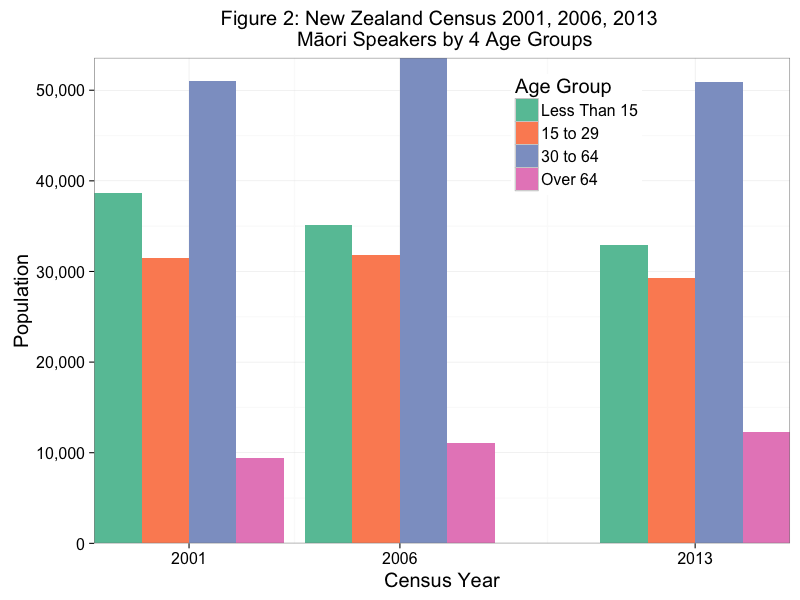
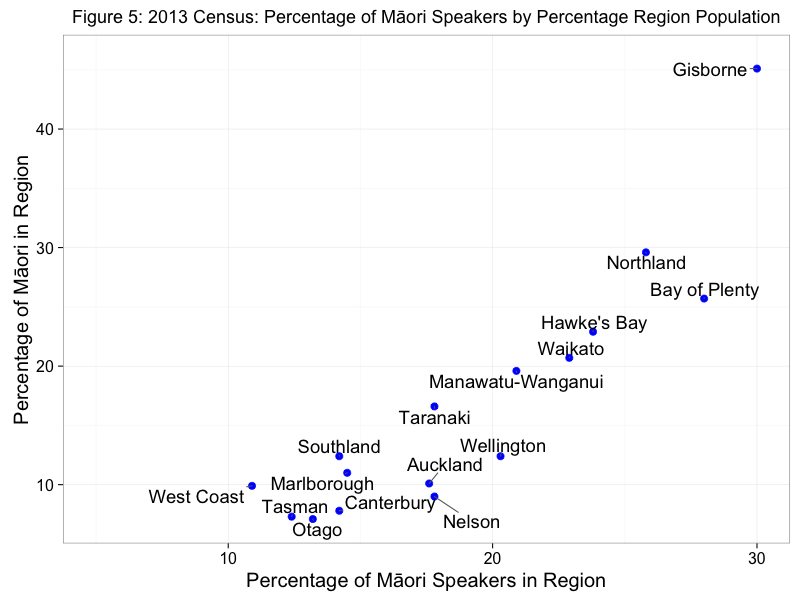
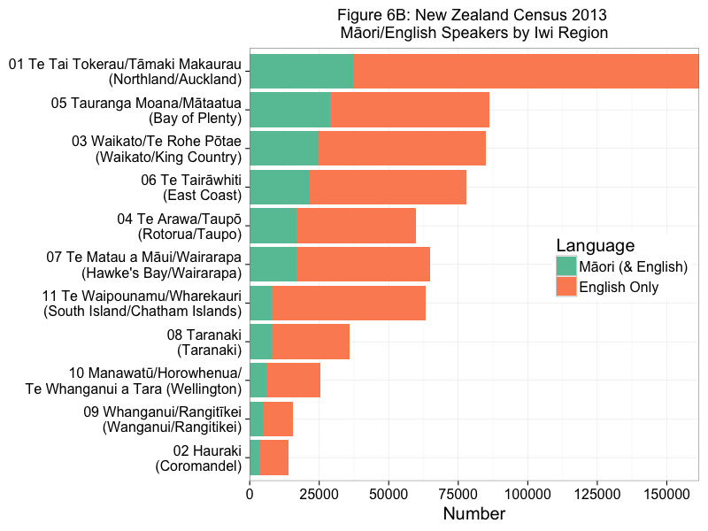
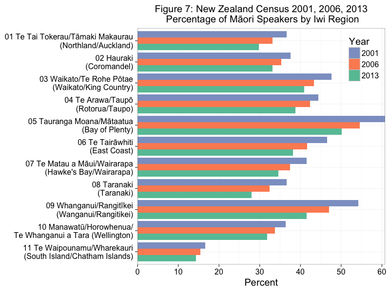

Looking at Maori language statistics from New Zealand Census Data
(1st version, 4 February 2014, updated 20 Dec 2014)
Maori language stats from New Zealand Census data (mostly 2001, 2006, 2013)
Due to the Christchurch earthquake in 2011, the NZ Census time series is irregular. I am interested in trends, not absolute numbers. I suspect that there is a lot of over reporting on the language question.
Overview, the big picture
Figure 1 presents the number of Maori by descent, ethnicity and Maori language speakers (only those claiming Maori ethnicity), from 1991 and includes a rough projection to 2021, the most likely date of the next New Zealand census.

Question on language use has only been asked since 2001. Figure 1, shows there has been a reasonably consistent increase in the number of Maori claiming Maori descent and Maori ethnicity, but a reasonably steady decrease in the number of Maori language speakers.
Maori Language Speakers by 4 Age Groups
Figure 2 presents Maori language speakers (only those of Maori ethnicity) by 4 age groups.

Figure 2 clearly shows that in terms of absolute numbers there have been reasonably consistent decreases in all age groups (from 2001 to 2013), with the exception of those of over the age of 64.
Maori Language Speakers by NZ Census Regions
Figure 3 displays the number of Maori language speakers by Region, from 2001 to 2013.

It appears that in many regions there were increases in 2006, but consistent decreases in 2013. More on this below.
Figure 4 displays the percentage of Maori language speakers by region. I.e., what percentage of the Maori population (in that region) claim to be speakers of Maori.

There are larger percentages of Maori speakers where there are higher percentages of Maori, although the reasons for this are historic and largely reflect delayed language shift in rural areas where Maori communities are still intact.
Figure 5 displays percentage of speakers by the percentage of the population for each region as a scatter plot. In some ways this is kind of collapsing or combining figures 3 and 4.

There is a positive correlation between these variables.
Note that there is a lot of variation in regions such as Auckland and the Bay of Plenty. More on this later.
Maori Language Speakers by Census Iwi Regions
Maori identify with multply iwi (tribes), around 2.3/2.4
Iwi Regions should be regardes as 'Iwi Region of Origin' as the vast majority of Maori live outside of their Iwi region.
Iwi regions are combinations or groups of related iwi.



Figures were done in R (ggplot2) using RStudio on a MacBook Pro. Github repo is here. Figures were exported from R. Figure 5 was touched up in Pixelmator.